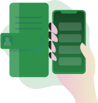

Reduce food waste

Reduce hunger

Many businesses have leftover food at the end of the day. Replate is an easy to use app that lets you effortlessly have those extras picked up by a volunteer of one of our worth partner non-profit organizations and donated. Choose a convenient time and a volunteer will show up and take your extras to a predetermined place of need.